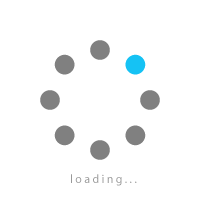

<!doctype html>
<html lang="en">
    <head id="#body {    margin-top: 0px;    margin-bottom: 0px;    margin-left: 0px;    margin-right: 0px;} >
 
<p align="center"></p>
<marquee bgcolor="#205E85"> <font color=white size=2> Sorgu yapmak istediginiz objeyi tikleyiniz... ... ... 	Gelistirici: Ali Salih DOYUM Veritabani Guncelleme Tarihi: 28.12.2016 V1.2</font></marquee>
<script type="text/javascript"><!--
<!--
<!--
<!--

document.write('<div id="loading" align="center"><font color="#000000" size="2" face="verdana">Haritalar yukleniyor...  </font></p><center>  </center></td></tr></table></div>');window.onload=function(){document.getElementById("loading").style.display="none";}//-->
</script>
        <meta charset="utf-8">
        <meta http-equiv="X-UA-Compatible" content="IE=edge">
        <meta name="viewport" content="initial-scale=1,user-scalable=no,maximum-scale=1,width=device-width">
        <meta name="mobile-web-app-capable" content="yes">
        <meta name="apple-mobile-web-app-capable" content="yes">
        <link rel="stylesheet" href="./resources/ol.css" />
        <link rel="stylesheet" href="resources/horsey.min.css">
        <link rel="stylesheet" href="resources/ol3-search-layer.min.css">
        <link rel="stylesheet" href="./resources/ol3-layerswitcher.css">
        <link rel="stylesheet" href="./resources/qgis2web.css">
        <style>
        html, body {
            background-color: #ffffff;
        }
        </style>
<style>
.tooltip {
  position: relative;
  background: rgba(0, 0, 0, 0.5);
  border-radius: 4px;
  color: white;
  padding: 4px 8px;
  opacity: 0.7;
  white-space: nowrap;
}
.tooltip-measure {
  opacity: 1;
  font-weight: bold;
}
.tooltip-static {
  background-color: #ffcc33;
  color: black;
  border: 1px solid white;
}
.tooltip-measure:before,
.tooltip-static:before {
  border-top: 6px solid rgba(0, 0, 0, 0.5);
  border-right: 6px solid transparent;
  border-left: 6px solid transparent;
  content: "";
  position: absolute;
  bottom: -6px;
  margin-left: -7px;
  left: 50%;
}
.tooltip-static:before {
  border-top-color: #ffcc33;
}
.measure-control {
  top: 100px;
  left: .5em;
}
.ol-touch .measure-control {
  top: 130px;
}
</style>
        <style>
        html, body, #map {
            width: 100%;
            height: 100%;
            padding: 0;
            margin: 0;
        }
        </style>
        <title></title>
    </head>
    <body>

<div id="map">

            <div id="popup" class="ol-popup">
                <a href="#" id="popup-closer" class="ol-popup-closer"></a>
                <div id="popup-content"></div>
            </div>
        </div>
        <script src="resources/qgis2web_expressions.js"></script>
<script src="http://cdnjs.cloudflare.com/ajax/libs/proj4js/2.3.6/proj4.js"></script>
        <script>proj4.defs('USER:100001','+proj=tmerc +lat_0=0 +lon_0=30 +k=1 +x_0=500000 +y_0=0 +ellps=GRS80 +units=m +no_defs');</script>
        <script src="resources/polyfills.js"></script>
        <script src="./resources/ol.js"></script>
        <script src="http://cdn.polyfill.io/v2/polyfill.min.js?features=Element.prototype.classList,URL"></script>
        <script src="resources/horsey.min.js"></script>
        <script src="resources/ol3-search-layer.min.js"></script>
        <script src="./resources/ol3-layerswitcher.js"></script>
        <script src="layers/ZAR0.js"></script><script src="layers/AHIS1.js"></script><script src="layers/BAHEEHR2.js"></script><script src="layers/TESKOOP3.js"></script><script src="layers/YELALAN4.js"></script><script src="layers/SOSYALALANLAR5.js"></script><script src="layers/DOGALGAZ6.js"></script><script src="layers/ATIKSUYAGMURSUYU7.js"></script><script src="layers/MESUYU8.js"></script><script src="layers/YOLKOTLARI9.js"></script>
        <script src="styles/ZAR0_style.js"></script><script src="styles/AHIS1_style.js"></script><script src="styles/BAHEEHR2_style.js"></script><script src="styles/TESKOOP3_style.js"></script><script src="styles/YELALAN4_style.js"></script><script src="styles/SOSYALALANLAR5_style.js"></script><script src="styles/DOGALGAZ6_style.js"></script><script src="styles/ATIKSUYAGMURSUYU7_style.js"></script><script src="styles/MESUYU8_style.js"></script><script src="styles/YOLKOTLARI9_style.js"></script>
        <script src="./layers/layers.js" type="text/javascript"></script> 
        <script src="./resources/qgis2web.js"></script>
	<script src="./resources/Autolinker.min.js"></script>
        
    </body>
</html>
